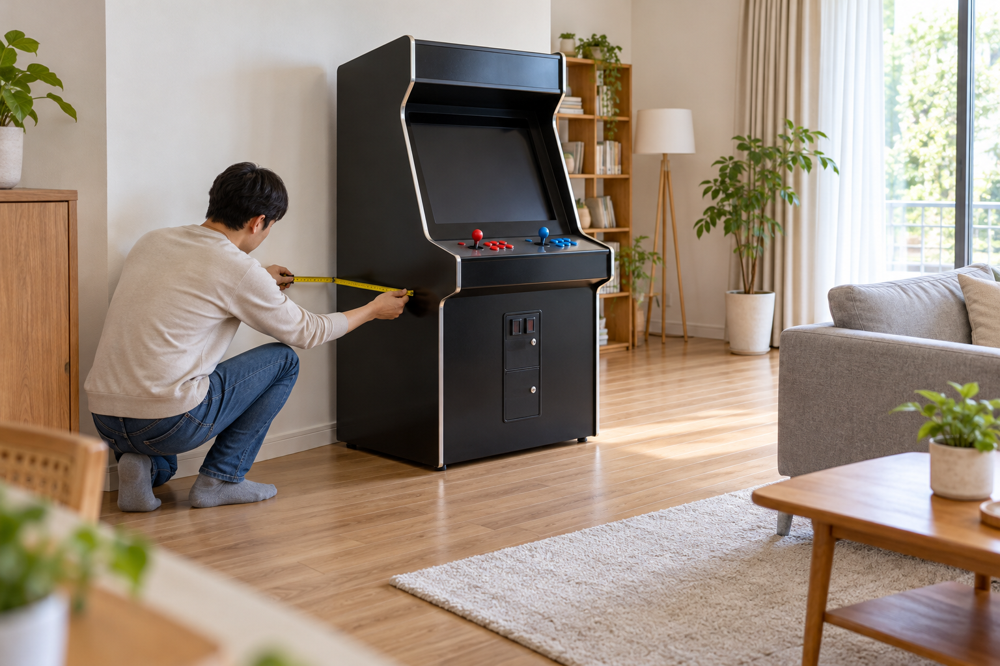
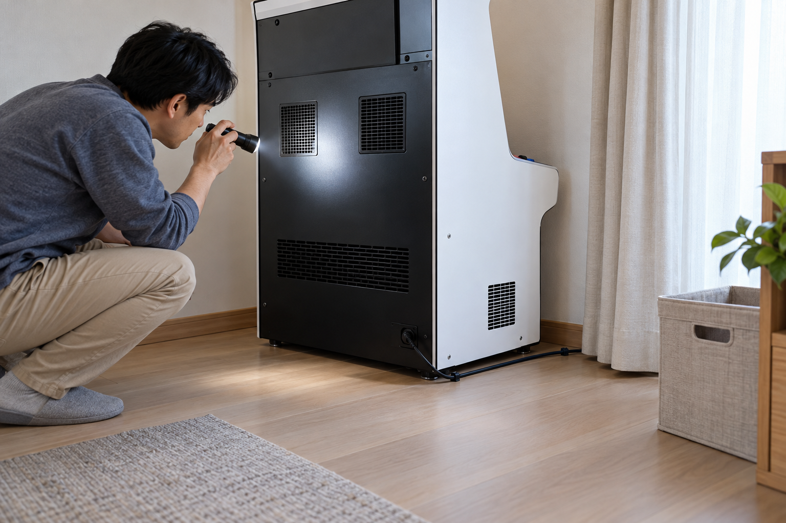

오락기 주변 통풍 공간은 먼저 정확한 제품의 통풍구 위치를 찾고, 제품 안내에 적힌 간격만큼 벽·가구·커튼·보관 물품이 떨어지도록 배치해 확인해야 합니다. 통풍구 앞에 케이블이나 상자를 두지 말고, 사용 중 평소와 다른 열감·소리·냄새가 느껴지면 전원을 안전하게 끈 뒤 상태를 기록해 판매자에게 문의하세요.

제품별 통풍구 위치를 먼저 찾으세요
전원을 끈 상태에서 본체의 뒤쪽과 옆쪽, 아래쪽을 눈으로 살펴 외부 통풍구가 어디에 있는지 확인하세요. 통풍구 위치와 필요한 여유 간격은 제품마다 다를 수 있으므로 다른 오락기의 사진이나 임의의 숫자를 기준으로 잡지 말고, 정확한 제품명과 판매 안내를 확인해야 합니다. 본체를 열거나 무거운 기기를 혼자 기울이지 말고 외부에서 확인하기 어려우면 판매자에게 통풍구 위치를 문의하세요.
통풍 공간의 기준은 다른 제품이 아니라 정확한 제품 안내에 표시된 통풍구와 권장 간격입니다.
노리박스 공개 제품 목록에는 스탠드형·좌식형·TV 연결형과 PC형 상품이 함께 안내되어 있습니다. 형태와 내부 구성이 다른 제품은 통풍구 위치도 같다고 단정할 수 없으므로, 상품명과 형태를 확인한 뒤 해당 제품의 안내를 따라야 합니다.

벽·가구·커튼이 통풍구를 가리지 않게 하세요
오락기를 설치할 자리에서 벽과 가구, 커튼이 통풍구를 덮지 않는지 여러 방향에서 살펴보세요. 문을 열거나 커튼을 움직였을 때 본체에 붙지 않는지, 옆에 둔 수납함이나 장식품이 통풍구 앞으로 이동하지 않는지도 확인하세요. 통풍 공간을 확보하면서도 사람이 지나는 길과 문 여닫는 범위를 막지 않아야 합니다.
벽·가구·커튼은 사용 중 움직이는 상태까지 고려해 모든 외부 통풍구에서 떨어뜨려야 합니다.
- 제품 안내에서 확인한 통풍구 위치와 필요한 간격
- 벽·가구·커튼이 움직였을 때 닿는 범위
- 상자·수납함·장식품을 임시로 놓는 자리
- 사람이 지나고 청소할 수 있는 주변 동선
설치 자리의 전체 크기를 재는 방법은 가정용 오락기 설치 공간 측정 방법에서 확인할 수 있습니다.
케이블과 보관 물품을 통풍 공간에서 빼세요
전원선과 화면 연결선이 통풍구 앞을 지나거나 본체 뒤에 뭉치지 않도록 경로를 정하세요. 여분의 케이블, 포장재, 게임 관련 물품을 본체 위나 뒤에 쌓지 말고 별도 수납 자리를 마련하세요. 케이블을 정리할 때는 단자가 당겨지지 않으며 통풍구와 이동 통로를 함께 피하는지 확인해야 합니다.
케이블과 보관 물품은 통풍구를 막지 않고 단자에 힘을 주지 않는 별도 위치로 정리해야 합니다.
전원선 상태와 연결 순서는 가정용 오락기 전원 연결 확인 순서를 함께 참고하세요.
사용 중 달라지는 상태를 기록하세요
설치 직후의 본체 주변 모습과 케이블 경로를 사진으로 남겨 두면 나중에 물건이 가까워졌는지 비교하기 쉽습니다. 사용 중 평소와 다른 열감이나 팬 소리, 냄새, 화면 이상이 느껴지면 반복 작동하거나 본체를 열지 말고 제품 안내에 따라 안전하게 전원을 끄세요. 제품명, 사용한 시간대, 달라진 상태와 주변 배치 사진을 정리해 판매자에게 전달하세요.
통풍 관련 이상은 임의 분해보다 제품명·발생 시점·주변 배치를 기록해 문의하는 것이 우선입니다.
노리박스 오락실게임기의 형태와 판매 중인 구성은 제품자세히보기에서 확인할 수 있습니다. 통풍구 위치나 필요한 주변 간격이 불분명하면 연락하기에서 정확한 제품명과 설치 자리 사진을 함께 알려 주세요.